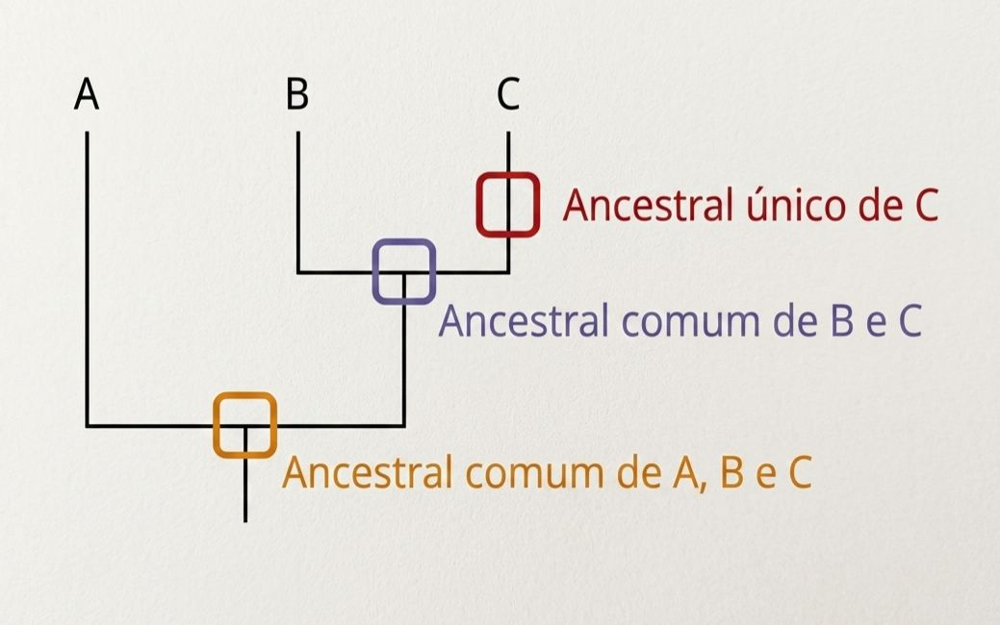
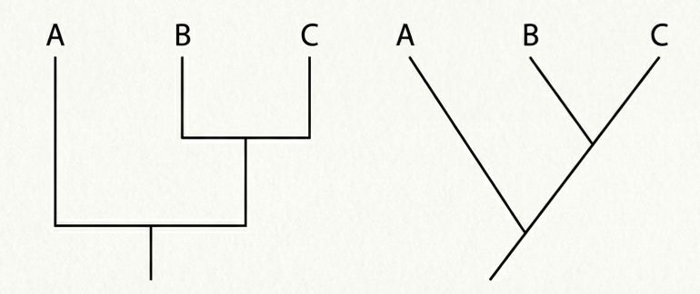
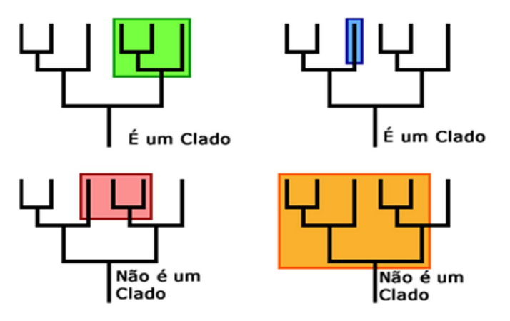
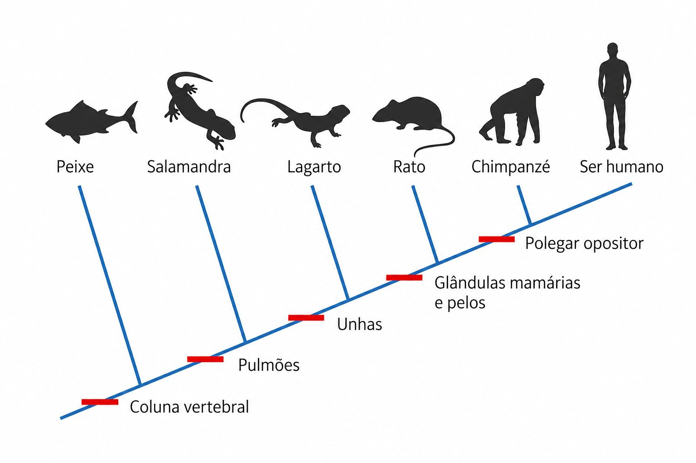

Taxonomia é a ciência que nomeia, descreve e classifica os seres vivos em grupos hierárquicos denominados
táxons.
Cada táxon é um agrupamento de organismos com base em semelhanças morfológicas, comportamentais, genéticas e
bioquímicas.
A Taxonomia faz parte de um ramo da Biologia denominado Sistemática, que classifica os seres vivos conforme
estudos de toda a sua diversidade, ou seja, as relações de parentesco entre os diferentes táxons. Os estudos de
Sistemática podem ter como base diferentes critérios, como morfológico, fisiológico, genético e evolutivo,
buscando compreender o relacionamento evolutivo entre as espécies.
O médico, botânico e biólogo sueco Carl von Linné (1707-1778), conhecido como Lineu, iniciou com seus trabalhos
a moderna classificação biológica. As ideias dele foram publicadas em 1735 na obra Systema Naturae
(Sistema
Natural).
Para facilitar o estudo dos seres vivos, cientistas buscam agrupá-los de acordo com as características em comum que apresentam.
Devido aos avanços tecnológicos e, principalmente, ao desenvolvimento da Biologia Molecular, há constantes mudanças na classificação dos seres vivos. Observe a linha do tempo ao lado para compreender a origem e a evolução dos grupos desde Carl Linnaeus, em 1735, com a publicação de seu livro Systema Naturae. Independentemente do sistema de classificação utilizado, é importante identificar as principais características de cada reino em que se encontram distribuídos os seres vivos.
Lynn Margulis foi uma bióloga estadunidense importante para o estudo da Biologia e contribuiu com a Teoria da Endossimbiose, na qual as mitocôndrias e os cloroplastos são considerados originariamente procariontes ancestrais.

O reino Monera agrupa os organismos unicelulares (isolados, coloniais de vida livre e parasitas) e procariontes. Pertencem a esse reino as arqueas e as bactérias.
No reino Protoctista, estão incluídos seres unicelulares e pluricelulares com pequena diferenciação celular. São eucariontes, heterótrofos (como os protozoários) ou autótroficos (como as algas). Pertecem também a esse reino os mixomicetos, anteriormente classificados como fungos.
Estão no reino Fungi os organismos eucariontes, uni ou pluricelulares e heterótrofos por absorção, como os cogumelos, os bolores, as leveduras e outros fungos.
No reino Plantae, estão agrupados as plantas, que são organismos eucariontes, pluricelulares e autótrofos fotossintezantes dotados de tecidos verdadeiros. Musgos, samambaias, pinheiros e árvores frutíferas compõem essse reino.
Todos os organismos eucariontes, pluricelulares e heterótrofos por ingestão são agrupados no reino Animalia, desde os animais mais simples, como as esponjas-do-mar (não dotadas de tecido verdadeiros), até os mais complexos, como os cordados (que possuem tecidos).
No sistema criado por Carl von Linné, a espécie é considerada o táxon básico da classificação. Atualmente
considera-se espécie um conjunto reprodutivo de indivíduos semelhantes (população), sexualmente isolado
de
outras populações (indivíduos férteis entre si e estéreis com outras espécies), que ocupa um nicho ecológico
(alimento, abrigo, comportamento etc.) específico na natureza.
O sistema de Lineu foi aprimorado e atualmente as categorias taxonômicas, do maior táxon para o menor, são:
domínio, reino, filo (animais) ou divisão (plantas), classe, ordem, família, gênero e
espécie.
Para indicar reuniões ou subdivisões dos táxons básicos dessa classificação, podem ser acrescentados os prefixos
super-, sub-, infra etc. Ordens de uma mesma classe podem ser reunidas em superordens, uma ordem pode ser
dividida em subordens e estas, em infraordens.
A Filogenia estuda as relações evolutivas entre grupos de seres vivos, traçando padrões de ancestralidade
compartilhados por diferentes linhagens.
As relações evolutivas estudadas pela Filogenia podem ser representadas graficamente pelas árvores
filogenéticas
ou cladogramas, diagramas em forma de árvore que apresentam as relações evolutivas entre várias espécies
ou
grupos que possam ter um ancestral em comum.
As árvores filogenéticas são elaboradas com base em uma matriz, contendo os dados morfológicos, químicos ou
genéticos relativos aos táxons estudados. Esses dados são comparados e os táxons são agrupados em clados
ou
ramos de acordo com as semelhanças e diferenças entre si.
Em uma árvore filogenética, é possível observar tanto os ancestrais únicos para aquela linhagem quanto os que
são compartilhados com outras linhagens. Veja o exemplo a seguir.

Veja a seguir dois exemplos de árvores filogenéticas ou cladogramas. É possível observar que, independentemente da forma do diagrama, a posição ocupada pelos táxons é o que realmente importa.

Substituindo os táxons tradicionais, muitos cientistas têm utilizado o termo clado para designar um grupo de organismos que inclui um ancestral comum e todos os seus descendentes, vivos ou extintos. Por exemplo, as aves, os crocodilos, os dinossauros e seus parentes extintos formam um clado ou grupo monofilético.

Ao construir uma árvore filogenética, o objetivo é encontrar evidências que ajudarão a agrupar os organismos em
clados cada vez mais específicos. Para tanto, observam-se características derivadas e compartilhadas. As
características derivadas são aquelas que evoluíram na linhagem formando um clado separado do clado de
outros
indivíduos, e as características compartilhadas são aquelas que duas linhagens têm em comum.
Por exemplo, em um cladograma que representa as relações evolutivas entre alguns craniados (vertebrados),
observam-se os pontos em que surgiram novidades evolutivas (características) exclusivas daquele grupo, derivadas
de uma condição existente no ancestral.

Os cladogramas não representam uma relação hierárquica entre os organismos, mas apresentam a história evolutiva
dos diferentes grupos e os relacionam, mostrando os ancestrais comuns e as características compartilhadas pelos
diversos grupos.
Em 1966, o entomólogo alemão Willi Hennig identificou três tipos de agrupamentos taxonômicos:

Em 2020, 285 anos após a proposição do sistema de classificação dos seres vivos baseada no Systema Naturae de Lineu, um grupo de cientistas propôs um novo sistema de classificação chamado PhyloCode. Esse novo sistema considera a Teoria da Evolução de Charles Darwin, de modo que a espécie e o clado seriam os principais critérios de classificação dos seres vivos, ou seja, do parentesco entre eles. Ainda é necessário aguardar o reconhecimento desse novo sistema pela comunidade científica geral.
Clique aqui para praticar com exercícios sobre o tema desta sessão.